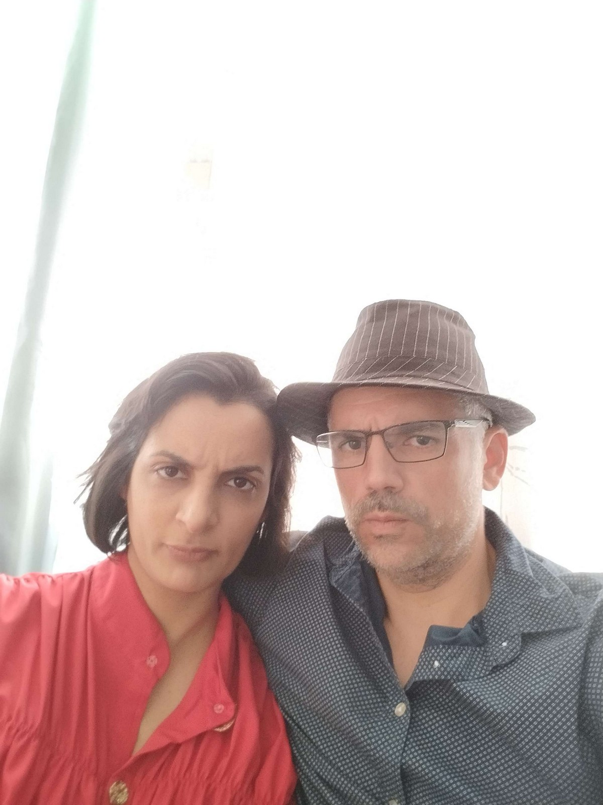

Je te félicite, tu as reussi ton contrôle sur les moyennes et les variances, ou alors tu as demandé à un prof de ton collège de t'aider.
Dans la vie on ne peut pas savoir tout faire, mais on peu s'entourer des bonnes personnes. Voici donc la suite de la lettre, et cette fois-ci plus d'entourloupes, tu peux la lire tranquillement...

...
Le paradoxe de notre histoire d’amour c’est qu’elle s’est arrêtée avant même d’avoir existée aux yeux des autres. Comment faire le deuil de ce qui n’a jamais réellement vu le jour ?
L’an prochain cela fera sept ans que nous nous sommes embrassés pour la première fois dans cette salle des profs. Pour moi, c’était hier. Sept ans… on dit que c’est un cap, une étape en amour.
Alors tournons la page de ces années, abandonnons les secrets et les peurs, et commençons ensemble une nouvelle histoire, claire, publique, assumée. Lesquels de nos amis seront étonnés de nous
voir en couple ? Aucun je pense. Bien sûr, nous aurons des obstacles à surmonter, mais nous serons deux. Nous aurons nos ex à gérer ? Même pas sûr et en plus nous serons deux. Certains moments
seront plus difficiles que d’autres ? C’est évident mais nous serons deux. Tu regretteras Paris, ses musées, ses rues, ta famille de là-bas, la maison du Paradis à 30 km de Chartres.
J’en suis persuadé. Mais nous y retournerons.
Maintenant je ne voudrais pas que tu penses que je ne veux que toi. Bien évidemment je te veux comme amoureuse, mais je veux tout le pack « SERALY and CO » : je veux toi, je veux Sam, je veux Rohan et Noah. ( je prends même Issouf )
Je veux être ton garde-fou et empêcher que ton travail ne te monte trop à la tête pour que tu restes la belle personne que j’aime tant ; je veux faire du jardin avec Sam le samedi matin, avant d’aller grimper
l’après-midi avec Boris, puis faire une brochette roots le soir avec tes cousines ; je veux aller chercher Rohan et Noah,… et soyons fous rajoutons Charles,… à l’école et leur faire faire leurs maths pour les devoirs du lendemain.
Tu sais, tes enfants aussi ont le droit d’avoir une figure masculine au quotidien. Je veux fermer le clapet d'Issouf quand il ouvrira trop sa langue de pute ( comme il dit ) et je veux lui apprendre à s'occuper de ses enfants.
Et puis de temps en temps je veux laisser les enfants à Sam ou à qui voudra bien les garder et t’emmener en week-end juste toi et moi.
Et puis je veux t’emmener en Laponie… J’ai tellement peur en écrivant ces lignes que tout çà te terrifie, mais il ne faut pas, t’ai-je déjà trahi ou menti ? Fais-moi confiance s’il te plaît, et accepte la main que je te tends,
elle est honnête, sincère et forte d’une force que je n’explique pas mais qui pourrait ouvrir un océan en deux s’il le fallait.
Je l’avoue, peut-être que ça ne marchera pas. Il y aura peut-être trop d’obstacles à surmonter et tout cela nous dévora ? Ou alors au contraire, peut-être que la routine s’installera, que l’ennui nous gagnera après avoir revu deux
fois l’intégrale de Grey’s Anatomy ? Je n’en sais rien car dans la vie on ne peut pas tout maîtriser, tout contrôler à l’avance, et si c’est le cas si c’est trop difficile ou trop ennuyant, alors nous refermerons cette seconde page,
et nous en écrirons chacun une autre. Mais pour l’heure, commençons seulement les premières lignes de cette nouvelle histoire, avant de songer à la suivante. Et surtout, n’oublions pas : peut-être que cela fonctionnera. Et il n’existe
qu’une seule manière de le découvrir : tenter l’aventure.
Bien évidemment tout ce que je viens d’écrire n’a de sens que si au fond de toi, j’ai encore une place dans ton cœur...
On en a fini avec les mathématiques promis. Résoud ce rebus pour accéder à la fin de la lettre.
Mon premier est la première lettre de la cinquième planète du système solaire.
Mon deuxième est une lettre qui quand on la prononce est aussi un verbe du premier groupe, conjugué à la première personne du présent de l'indicatif, et qui signifie que l'on apprécie quelquechose ou bien quelqu'un.
Normalement tu as déjà trouvé mon troisième. Tu n'es donc qu'à trois lettres de la Victoire.